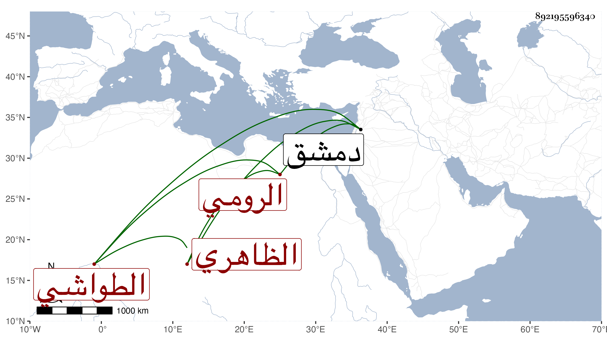

0902Sakhawi.DawLamic.ITO20230111-ara1.EIS1600.892195596340
Biography ID: 892195596340
1128
شاهين الرومي الظاهري جقمق الطواشي ويعرف بشاهين غزالي . أصله من خدام فارس نائب قلعة دمشق فرآه جرباش المحمدي كرد الناصري في سنة ثلاث وأربعين بها حين توجهه ببعض التقاليد فأعجبه جمال صورته ، وأعلم الظاهر جقمق بذلك فراسل بطلبه فأرسله له سيده مع تقدمة ، وحينئذ أعتقه الظاهر وجعله خازنا ثم ساقيا إلى أن عمله الظاهر خشقدم رأس نوبة الجمدارية بعد عزل خجداشه خشقدم الاحمدي ، ولما استقر الاشرف قايتباي خالطه منه بعد خوف في الباطن فلم يلبث أن مرض في ربيع الآخر ثم مات في ليلة ثامن إحدى الجمادين سنة ثلاث وسبعين ، ودفن من الغد ، وحضر السلطان الصلاة عليه بالمؤمني وقد قارب الخمسين ، وكان من أحسن أبناء جنسه وجها وأطولهم قدا وأحسنهم لفظا وأفصحهم لسانا وأحلاهم مذاكرة وأكثرهم أدبا بل هو نادرتهم في مجموع محاسنه رحمه الله وعفا عنه .
